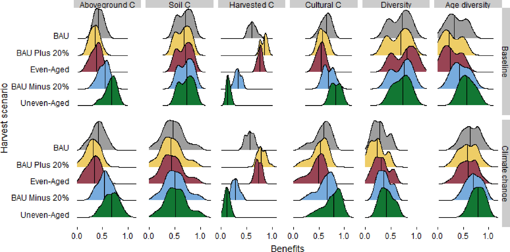

Climate Uncertainties & Risks

Future climate risks are challenging to quantify due to their dependence on uncertain greenhouse gas emissions and Earth-system dynamics. We work on characterizing how risks such as sea-level rise and water shortages respond to socioeconomic changes (such as emissions pathways and economic growth) and their interactions with Earth-system uncertainties.
Selected Publications





No matching items